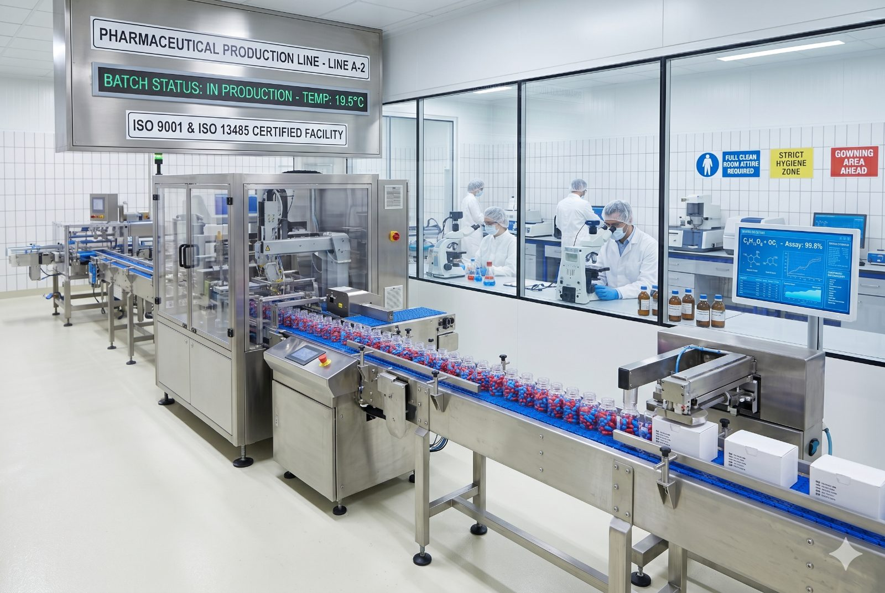

FDA 21 CFR Part 11, APQP y historial inmutable. Cada lote, cada firma, cada desviación registrada automáticamente. Auditás en horas, no en semanas. Cero recalls documentados en clientes activos.

No es solo plata. Un warning letter o un recall destruye reputación que tardaste 20 años en construir.
Firmas electrónicas cualificadas, audit trail inmutable, control de acceso por rol. Cumplimiento desde el día 1 sin desarrollos.
Control charts para peso de comprimidos, uniformidad de contenido, dureza, friabilidad, tiempo de disolución.
Acciones correctivas y preventivas con flujo de aprobación, evidencia adjunta y cierre automático de desviaciones.
Registros FDA/ANMAT/EMA organizados desde el día 1. Audit trail inmutable, firmas electrónicas y datos de proceso listos cuando el auditor llegue. Preparación: horas, no semanas.
Advanced Product Quality Planning integrado. Cada lote liberado con trazabilidad completa hacia materias primas y operarios.
Protocolos de validación documentados en el sistema. Qualification automático sobre datos reales de producción.
Revisamos tu situación actual vs. FDA/ANMAT e identificamos las brechas críticas.
21 CFR 11 activo. Primeros lotes con trazabilidad digital completa.
PQ sobre datos reales. SPC por producto. CAPA digital en toda la planta.
Paquete FDA/ANMAT generado. Mock audit interno aprobado.
Un recall en farmacéutica puede superar los $10M. Estos números son conservadores.
Te mostramos el sistema con 21 CFR 11 activo, audit trail real y el paquete de auditoría generado en vivo.